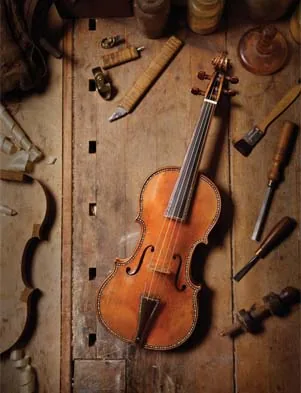

Поставка
Эксклюзивные струнные, духовые, ударные, клавишные инструменты и аксессуары.
Профессиональные музыкальные инструменты · сцена · сервис
Русское Музыкальное Собрание — пространство выбора для музыканта, оркестра и сцены: от мастеровой скрипки и рояля до комплексного оснащения концертного зала.
Не просто магазин
В одном пространстве соединяются профессиональные инструменты, аксессуары, мастеровые позиции, сценические решения и работа под заказ. Но смысл начинается раньше каталога — с понимания того, для кого и для какой музыки выбирается инструмент.
Акт I / Живое собрание
Выберите группу. Колода перестроится, а активная карточка откроет направление, характер и состав категории.
Струнные / мастеровые инструменты
От современных мастерских до редких исторических инструментов — с подбором по звуку, классу, сценарию и бюджету.
Полный состав
Акт II / Персональный маршрут
Покупка — только один сценарий. Иногда правильнее начать с аренды, запроса под заказ или временного экспонирования.
Сопоставляем инструмент с техникой, репертуаром, задачей и привычным ощущением музыканта.
Акт III / Партитура сервиса
RMS работает не только с товаром, но и со всем контекстом вокруг него: поставкой, установкой, эксплуатацией, сценой и закупочной процедурой.

Эксклюзивные струнные, духовые, ударные, клавишные инструменты и аксессуары.
Сотрудничество с мировыми брендами, частными мастерами и аукционными домами России и Европы.
Настройка, установка, гарантийное и постгарантийное обслуживание.
Работа с государственными и корпоративными организациями в регламентированных закупочных процедурах.
Реновация, акустические решения, мебель, декорации и сценическое оборудование для концертных залов.
Индивидуальный поиск редких, специализированных и нестандартных позиций под конкретную задачу.
Интерлюдия / Деталь решает
Вторая галерея собирает не группы, а фактуры — то, что обычно остаётся за пределами витрины, но формирует ощущение от инструмента.
Акт IV / Институции
Русское Музыкальное Собрание работает с театрами, филармониями, оркестрами, консерваториями и учебными учреждениями.
Собственная линия
Собственная продуктовая линия «Орфей» расширяет роль RMS: от дистрибуции и кураторского выбора — к формированию своей музыкальной истории.
От инструмента — к пространству
Комплексные проекты могут включать реновацию, акустические решения, декорации, мебель, сценическое и студийное оборудование. Здесь предмет заканчивается — и начинается среда.
Финал / Москва
ул. Малая Никитская, 27с1
Москва, Россия, 121069
11:00–20:00
понедельник — суббота